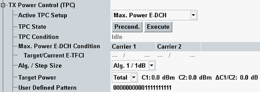

The following TPC general settings are available.

Select a TPC setup and configure it via the other parameters.
Possible selection is based on scenario and active channels. For example, the setup "DC HSPA In-Band Emission" is only applicable in the scenario with dual uplink carrier.
For automatic signal settings the wizard for "Max. Power E-DCH" and "DC HSPA In-Band Emission" is available, see "Using the WCDMA Wizards".
Option R&S CMW-KS410 is required for "Change of TFC".
Option R&S CMW-KS401 is required for "Max. Power E-DCH".
Option R&S CMW-KS405 is required for "DC HSPA In-Band Emission".
Remote command:When the button "Precond." is pressed, the instrument sends a TPC pattern to the UE to reach the precondition defined in the "TPC Setup" table for the active TPC setup. In most situations this action is performed automatically, see "Preconditions and Pattern Execution".
After the precondition has been reached, the button "Execute" allows you to start the execution of the active TPC setup.
These actions are only possible in connection state "Connection Established". The buttons have no effect in other connection states.
When one of the buttons is pressed for TPC setup "Max. Power E-DCH", an initial check is performed before the action is executed. The check verifies that both the target E-TFCI and the current E-TFCI can be determined and are equal. If not, the initiated action is aborted and the "TPC Condition" indicates the error (e.g. "Missing Resource" or "Setting Conflict").
Remote command:Displays the current TPC state. Transition states that would be displayed for a short time only are indicated via remote command, but not displayed at the GUI (e.g. transmission of single pattern).
- "Idle": no connection established
- "Continuous Pattern": transmitting continuous pattern
- "Alternating": transmitting alternating pattern
- "Prec. <Precondition> (press Execute)": indicated <Precondition> has been reached
- "<State> (press Precond. or Execute)": The current <State> results from a previously executed TPC setup and does not match the precondition of the active TPC setup.
- "Target Power Locked": closed loop target power reached
- "Target Power Unlocked": reaching closed loop target power failed
- "Max Power": maximum power reached
- "Min Power": minimum power reached
- "Missing Resource": required resources are in use by another measurement
- "Searching": setup started, max power not yet reached
- "Failed": test procedure failed in state "Searching", see "Max. Power E-DCH Condition" for details
- "Setting Conflict": settings inappropriate for the setup, see "Max. Power E-DCH Condition" for details
- "Settings Changed": relevant settings changed after the setup execution
This parameter is visible if the TPC setup "Max. Power E-DCH" is active (requires option R&S CMW-KS401).
- Target E-TFCI: expected E-TFCI value, calculated from the HSUPA settings
- Current E-TFCI: value sent by the UE, monitored repeatedly during execution of the setup, each time for 150 ms
If several E-TFCI values have been monitored within the 150 ms, the smallest value is displayed. Exception: If the smallest value equals the target E-TFCI, the next larger monitored value is displayed instead.
When executing the "Max. Power E-DCH" setup, the displayed E-TFCI values and the displayed TPC state can be used for troubleshooting as follows.
TPC state | Target/Current E-TFCI | Meaning |
|---|---|---|
"Setting Conflict" | no target E-TFCI | The HSUPA settings disable the calculation of an unambiguous E-TFCI value (for example alternating values). Correct the HSUPA settings. |
"Setting Conflict" | two different values | Most probably the closed loop target power serving as precondition is too high. Check this setting. It has to be at least 7.5 dB lower than the maximum UE power. |
"Target Power Locked" | no current E-TFCI | After the precondition has been reached, settings have been changed. Press "Precond." or "Execute" to update the displayed E-TFCI values and to reach the precondition again / execute the setup. |
"Failed" | two equal values | This state indicates a timeout in subtest 1 to 4. The UE has not sent a decreased E-TFCI. |
"Failed" | two different values | Subtest 1 to 4: The UE has sent a decreased E-TFCI. But it has failed to increase the E-TFCI value back to the target value. Subtest 5: The current and target E-TFCI have been equal when the TPC setup was started, but they differ when the maximum power is assumed to be reached. |
Define the power control algorithm (1 or 2) and the TPC step size (1dB or 2dB) to be signaled to the UE, see "Transmit Power Control (TPC)".
Some setups use a fixed algorithm and step size, so that this setting is ignored, see table column "Alg./Step".
The duration of a TPC pattern required to command a UE to reach a precondition depends on the algorithm and TPC step size of the UE. For that reason correct settings are especially important when using a TPC setup with a precondition.
Remote command:The target power can be defined either as total power or as DPCH power.
Note that during HSDPA / HSPA call, the actual UE power can be lesser than the target power specified as total power. It happens in case, if not all HSPA uplink channels are transmitting at maximum level.
In the operation with dual uplink carrier, the offset between the uplink carriers can be defined in addition. This offset sets the power difference between the total power of primary carrier and the total power of secondary carrier as defined in 3GPP TS 34.121, section 5.2BA: "UE Maximum Output Power for DC-HSUPA (QPSK)" and other conformance tests.
Target power is relevant for the closed loop setup and for setups having "Target Power" as precondition.
Remote command:Define a pattern for the TPC setups "Single Pattern" and "Continuous Pattern".
Remote command: